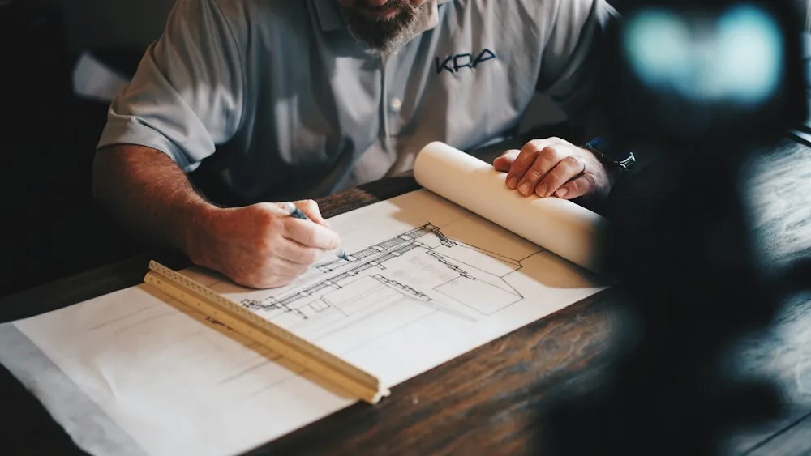
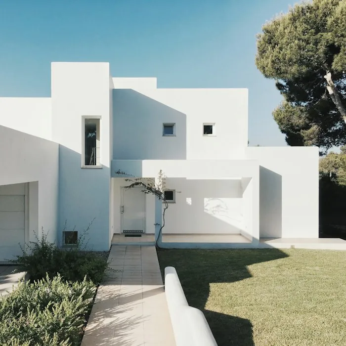

Por que compatibilidade importa mais que portfólio
Um portfólio impressionante não garante que o arquiteto entenda o que você precisa. Entenda como a IA equilibra estilo, orçamento e expectativas.
Reflexões da equipe match.IA sobre tecnologia, compatibilidade profissional e o mercado de arquitetura.

Um portfólio impressionante não garante que o arquiteto entenda o que você precisa. Entenda como a IA equilibra estilo, orçamento e expectativas.

Projetos residenciais levam de 3 a 6 meses. Veja como alinhar expectativas desde o início economiza tempo e dinheiro.

Como estudos volumétricos gerados com apoio de IA aceleram a etapa mais criativa do projeto arquitetônico.
Novos conteúdos em breve — este blog é parte do projeto acadêmico match.IA.